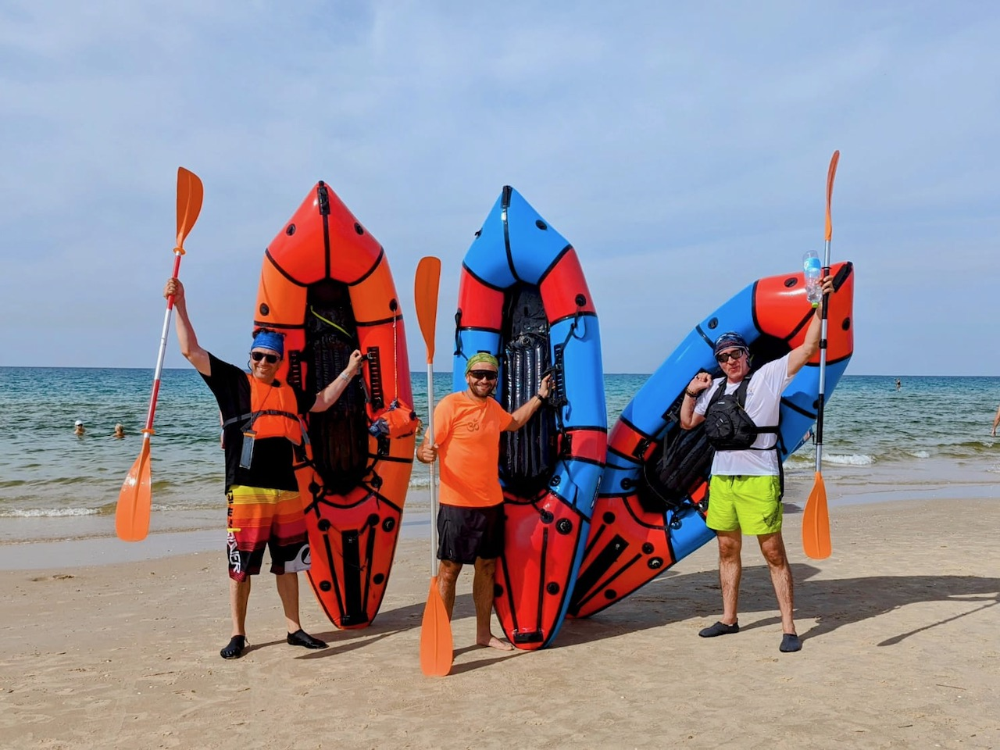

Ощутите магию природы
Пакрафтинг – это удивительный способ исследовать природу Израиля с новой стороны...
Пакрафтинг сочетает в себе активный отдых, исследование природы и путешествия по воде. Его основа – легкая, компактная и универсальная надувная лодка, пакрафт, которую можно легко носить с собой в рюкзаке.
Израиль – отличное место для пакрафтинга. Его реки, озера и морские побережья предоставляют разнообразные ландшафты:
Минимальный набор для начала пакрафтинга включает:
Пакрафтинг – это не просто спорт, это стиль жизни. Это способ исследовать природу, сбежать от городской суеты и испытать себя. Попробуйте, и вы откроете новый мир приключений!

Уникальные водные приключения ждут вас!
Пакрафтинг – это удивительный способ исследовать природу Израиля с новой стороны...
Мы – команда энтузиастов, объединенных любовью к природе, рекам, озерам, морю и, конечно же, адреналину бурной воды! packraft.co.il – это сообщество единомышленников, готовых покорять водные просторы Израиля вместе с вами. Мы предлагаем захватывающие приключения для всех, кто жаждет испытать себя и открыть для себя красоту дикой природы с новой, захватывающей перспективы.
Всё началось с сплава - похода длиной 120 км. по Карельским рекам и озёрам, на больших рафтах и каяках. Потом был курс на морских каяках. Ну и как вы уже догадались мы приобрели наши пакрафты. Мы сами прошли через множество порогов, исследовали скрытые бухты и живописные берега, и теперь хотим поделиться этим опытом с вами. packraft.co.il – это результат нашей мечты сделать пакрафтинг доступным для каждого, кто ищет настоящих приключений.